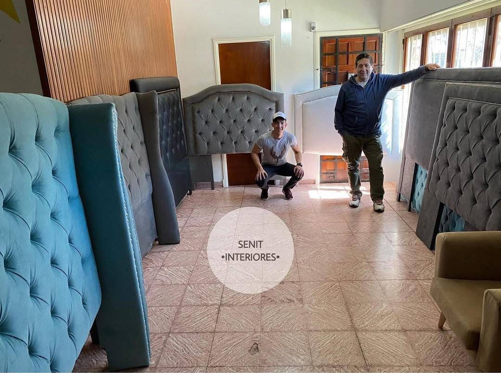

Sobre Nosotros
Senit Interiores nació en Mar del Plata como un emprendimiento especializado en tapicería, ofreciendo restauración y personalización de muebles con gran atención al detalle. Con el tiempo, ampliamos nuestros servicios hacia el diseño de interiores y la carpintería, brindando soluciones integrales para hogares y espacios comerciales.
Gracias a la confianza de nuestros clientes y nuestro compromiso con la calidad, recientemente inauguramos un nuevo local en la esquina de Moreno y La Rioja, donde exhibimos nuestros trabajos y asesoramos a quienes buscan transformar sus espacios con un toque único y personalizado.
